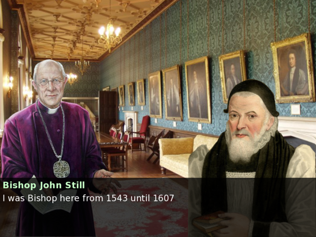
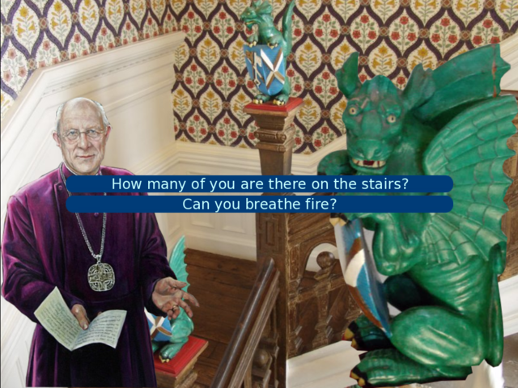

MATT THOMPSON
Every Object Tells a Story
Thu Jul 14th 2016
As part of my EngD course, I was lucky enough to have the opportunity to collaborate with the Bishops' Palace in Wells on a proof-of-concept tour guide prototype. The tour guide is to be presented to visitors through a tablet device as they walk around the palace grounds.
Its presentation was a little unusual: rather than simply presenting facts in a linear manner, they are presented in the form of a story that changes and adapts according to the actions of the visitor (such as where they go, what questions they ask and what they look at).
The game took the form of a Japanese-style "visual novel", where the player wanders around examining items and asking questions to characters. I cut out pictures of the bishops from their paintings to use as the character avatars. Background images were simple photos of rooms in the palace.

Bishop John Still talks about himself
The visitors' location is triangulated based on their position relative to bluetooth LE radio beacons placed thoughout the rooms. These beacons (also known as iBeacons) simply emit a constant radio signal, and a device's position can be calculated based on the strengths of multiple beacon signals.
Bluetooth LE radio beacon photo by Jonathan Nalder from Kilcoy, Australia - beacons by jnxyz.education, CC BY 2.0, https://commons.wikimedia.org/w/index.php?curid=33557266
The created system was only a proof-of-concept, but a fun one nonetheless. The eventual aim is to integrate it with the instition/social norm system described in my Punch and Judy post so that each character's actions follow a consistent narrative. For now, the story has been manually written, updating a visitor's location in the game based on their physical location.

Asking questions to the Stair Dragon
My eventual aim is to create a similar system that can be accessed online (minus the BLE location sensing, clearly), where authors can create their own non-linear narratives quickly and easily based on story tropes from the TV Tropes website, and play the generated visual novel. Right now, I'm working on the browser-based "StoryBuilder" authoring system that uses a domain specific language to describe story tropes. The next blog post will describe that system in more detail - when it's ready!